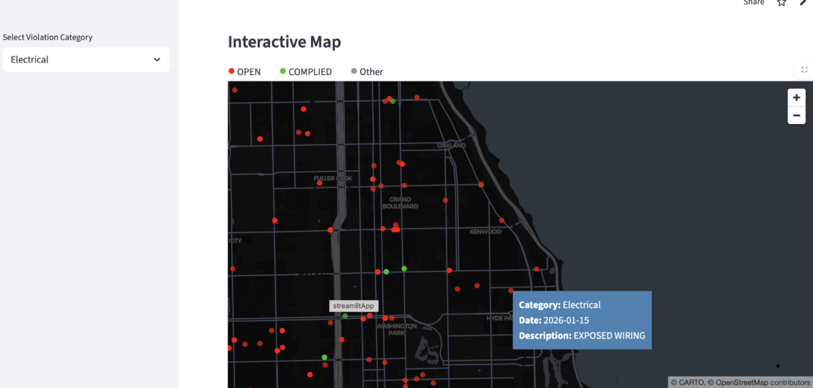

Chicago Building Code Violations and Income
Name: Rachel Alper, Lecture Section: T Th 11am, GitHub username: racheltoddalper
Motivation and Reasearch Question
Chicago has a code for how buildings are maintained and used, and residents can report violations by calling 311 or through an online for. If an inspector visits the building and finds violations, they will issue a citation. Inspectors can also find violations during routine or permit inspections. Chicago provides publicly available violation-level data, which I combined with income data to answer my research question: are building code enforcement patterns in Chicago distributed equitably across community areas, or do neighborhoods with different socioeconomic compositions experience different rates of inspections and violations?
Data and Data Processing
I used two main datasets, plus tract-level shapefiles to combine with the tract-level income data. I got income and population data from the American Community Survey (ACS), and used the City of Chicago Data Portal Building Violations by Address dataset for the violations. Key variables included: - date, latitude and longitude coordinates, violation description - Inspection category: 311 complaint, periodic inspection, or permit inspection - Violation status: indicates if violation has been addressed
To process my data for the analysis, I first spatially joined the violations data, which had point coordinates, with the tract-level income and population data. Then, I used population data to normalize the number of violations per tract to violations per 1000 residents. Finally, I used AI to categorize the over 200 unique violation descriptions into 7 categories: Windows / Doors / Interior, Structural / Building Envelope, Heating / HVAC / Boilers, Fire & Life Safety, Sanitation / Pests / Waste, Plumbing & Water, Electrical
For the figures, which are at the tract level, I aggregated the data to the tract level, and sorted the tracts into income quintiles based on the tract-level income data. I then took a population-weighted mean number of violations per 1000 residents. I did this to get the violations faced by the average resident, not the average tract.
Findings
My first figure shows the average number of complaints per 1000 by income quintile, and suggests that lower income tracts have more violations, driven primarily by having more violations stemming from complaints. The quintiles have relatively similar average numbers of violations from permit and routine inspections (though the higherst quintile does have more permit inspections), but the number of violations from complaints signficantly decreases with income.
My second figure shows the average violations by quintile, but divided by violation category. From this figure, we can see that categories with the most violations have more violations in the lower income quantiles. Specifically, these categories are Structural / Building Envelope, Windows / Doors / Interior, and Fire and Life Safety.


My Streamlit App is available here: https://finalproject-rachel.streamlit.app (but may need to be woken up before using). Users can select which category they want to view, and then the app will display a scatterplot of tracts, with violations per 1000 on the y-axis and income on the x-axis. The app will also display my first static figure but restricted to the selected cateogry. Finally, an interactive app plotting each violation is shown, with the points colored by whether the violation has been resolved or not. The tooltip also gives the original violation description.Data Limitations, Policy Implications, and Further Questions
Ultimately, the higher number of violations in low income areas could be due to several factors. Lower income areas have more renters, who would be more likely to file complaints than people in owner-occupied residences. If residents in low income areas face worse building conditions, the policy takeaway here would be to increase resources for complaint-driven enforcement, and ask why routine inspections aren’t catching what residents are already seeing. One additional question would be does the rate at which a complaint leads to a violation vary by income? However, one limitation of the data that I used is that it does not have complaints which did not lead to violations, so this would require using a different datset which was outside the scope of the project.